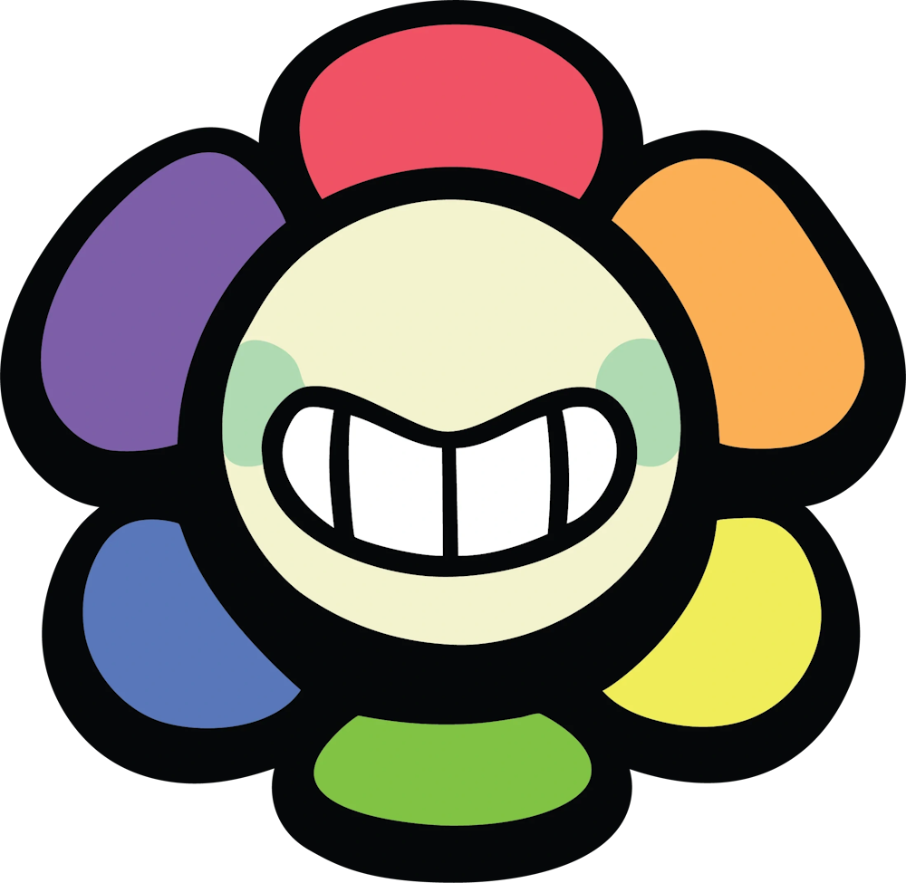

¿Qué es Dandy's World?
Dandy's World es un videojuego del género mascot horror desarrollado por el equipo de desarrollo
independiente de la plataforma y motor gráfico de Roblox: BlushCrunch Studio. El juego se
sostiene a partir de una mecánica simple: Tu, el jugador, tienes el rol de llenar una serie de máquinas
las cuales contienen Ichor (un líquido negro de origen desconocido cuya motivación de extracción sigue
manteniéndose como una incógnita) para poder seguir avanzando a través de los pisos que contiene el
Gardenview (lugar dónde se desarrollan los eventos del juego) mientras, en paralelo, evitas a los Twisted
(versiones retorcidas de los personaje jugables) que son capaces de quitarte la vida. A medida que se vas
avanzando, la dificultad aumenta considerablemente, con aspectos como el número de máquinas que toca llenar
y también la cantidad de enemigos presentes dentro de los pisos. El juego se puede realizar tanto de forma
individual como en equipo, con una cantidad máxima de 8 jugadores por partida, y el número de jugadores
dentro de la partida también afecta en gran parte el juego, ya que aumenta con mayor velocidad la cantidad
de máquinas que debes llenar y el número de Twisteds que se encuentran de forma simultanea dentro del piso.
¿Qué es un toon y qué es un twisted?
|
|
Toon |
Twisted |
| El Toon es el término de referencia para los personajes jugables. Su apariencia está
inspirada en un colorido personaje de dibujo animado y cada toon tiene sus propias
habilidades que en esencia los vuelve únicos. Cada toon maneja sus propias estadísticas
las cuales brinda equilibrio a la hora de jugar, algunos son buenos distractores, otros
son buenos estractores de las máquinas y otros sirven como soporte para los demás jugadores. |
El Twisted es la versión corrompida y retorcida de los personajes jugables. Caracterizados
por tener manchas de Ichor en su cuerpo y ojos rojos, tienen el rol de ashechar a los jugadores
y atacarlos. Al igual que los jugadores, cada Twisted tiene una característica que los puede voler
más o menos peligrosos, ya sea su radio de detección, su velocidad o la manera en la que interactuan
con el entorno. |
Personajes
El juego cuenta actualmente con 41 personajes, repartidos entre mains,
secundarios, raros y de eventos. En este caso vamos a hablar de los Toons Mains, ya que son
el corazón del juego y cumplen con un rol importante dentro del contexto del mismo.
Mains
|
|
Dandicus "Dandy" Dancifer
Es el personaje principal y la cara del Gardenview. Su naturaleza
es la de alguien alegre y optimista, en general quieriendo ayudar a los demás y preocupandose
por todos y cada uno de los Toons de Gardenview. Sin embargo, pese a tener un genuino interés
por todos los Toons, a menudo por sus diálogos se le ve como alguien desconfiado y que no tiende
a acercarse a otros Toons, debiddo al incidente que ocurrió dentro de las instalaciones que en
parte fueron por su culpa. Dandy te vende licencias de personajes, trinkets en el lobby, mientras
que en la partida se encarga de brindarte items que te resulten de utilidad dentro de la misma, apareciendo
cada vez que se completen pisos impares.
|
|
Astro Novalite
Astro es conocido como el "mejor amigo" de Dandy. Su
naturaleza por lo general es la de alguien calmado, atento y que en la medida
de lo posible intenta ayudar a otros toons en sus problemas. Es capaz de entrar
dentro de los sueños de otros Toons, así como sabe de sus pensamientos al
momento. A pesar de su serenidad, en realidad es alguien bastante nervioso
y también le causa ansiedad ser el centro de atención y también posee una
inseguridad por tener 4 brazos, por lo que siempre los oculta bajo su manta.
A pesar de su pseudónimo, este ya no se junta mucho con Dandy, por la paranoia
de parte de Dandy que se pueda enterar él y los demás toons de su secreto.
|
|
Pebble Dancifer Jr.
Pebble es la mascota oficial de Dandy. Es un perro con
apariencia de roca, y el segundo Toon en ser creado para el Gardenview, además
de ser uno de los pocos toons a los que Dandy a fecha actual mantiene un contacto
y relación. A pesar de no poder comunicarse más allá de ladridos, es capaz de
comprender lo que los demás Toons dicen cuando interactuan con el.
|
|
Shelly Fossilian
Shelly es otra de las Toons principales. Su personalidad
es de natraleza extrovertida y se basa en su gran interés por los dinosaurios.
Por lo general se le ve como alguien siempre activa y con el objetivo principal
de ser amiga y llevarse bien con todos los demás, manateniendo una relación muy
bonita con Vee ya que esta siempre le pregunta cosas sobre dinosaurios. A pesar
de ello, es la Main más ignorada de Gardenview, y aunque eso la llegue a molestar
por lo general intenta mantenerse optimista fingiendo que no es un problema que
le afecta. Cuando el Gardenview estaba abierto, los niños que iban confundían la
forma de su cabeza de concha de fósil con la de un Cinnabon.
|
|
Sprout Seedly
Sprout es un Toon de naturaleza sobreprotectora y afectiva, pero
al mismo tiempo se le conoce como alguien disciplinado y responsable. Se dedica principalmente
a la cocina y repostería con su mejor amigo Cosmo, así como este manejaba la comida y la
cafetería del Gardenview. A pesar de parecer como alguien a menudo despistado e ingenuo,
resulta ser bastante inteligente y en la medida de lo posible busca ser siempre directo con
sus palabras, a pesar de que ello lo puede hacer parecer como alguien muy duro con los otros
Toons. A pesar de que demuestra importancia y preocupación por otros Toons, a Sprout no le causa
mucha comodidad que otros Toons se preocupen por el de igual manera. Además, es uno de los Main
que directamente no tienen relación alguna con Dandy, más que nada porque este a menudo pasa por
alto de el, incluso cuando Sprout intenta comunicarse con este.
|
|
Vee Version 1
Vee es una Toon conocida por realizar juegos de Trivias
con los demás toons. Debido a su modo de pensar basado netamente en la lógica,
ella normalmente se le ve con una personalidad arrogante y medianamente superior
con los demás Toons, aunque es por su modo de ser que realmente actua de ese
modo de manera involuntaria. No le gusta que piensen que es solamente una máquina,
ya que esta posee emociones como el miedo y la inseguridad, aunque ella en la mayor
medida de lo posible busque reprimirlos. Es la única Main que tiene una relación de
odio mutuo hacia Dandy, por ser más que nada un conflicto de egos, por lo que, al igual
que Sprout, Dandy acostumbra a ignorarla y no hablar con ella.
|
Mains de eventos
|
|
Bassie Bloomington
Bassie es una Toon de evento que representa la primavera.
Es de naturaleza bastante tímida y le cuesta mucho mantener alguna relación afectiva
con otros Toons. Aunque no lo diga de forma explícita siente una relación amor-odio
hacia Cocoa, por la idea de que es mejor que ella en todo aspecto posible y que le
quedaría mejor el titulo de Main, pero en paralelo no siente odio o rechazo hacia Cocoa.
Intenta esforzarse demasiado para sentir que está aportando a los demás Toons, pero
también llega a incomodar a los demás al no saber exactamente que hacer o reaccionar
ante algunas situaciones. Por lo general intenta pensar que todo lo que hace está por
buen rumbo e intenta mantener una postura positiva, aunque esto al final no resulte
más allá de una tapadera de sus sentimientos reales.
|
|
Gourdy Holloway
Gourdy es el Toon que representa el Halloween. A pesar de ser
un niño que actua de forma amigable y agradable, se siente solo y deprimido por la
ausencia de sus padres. Sin embargo, este mantiene una relación amistosa con Toddles, más
que nada por la naturaleza infantil y huerfana que tienen en común. A pesar de ser considerado
un Main, este considera que los demás Mains son bastante superiores a él, por lo que
tiene bastante respeto por ellos y los llega a idolatrar bastante. Siempre parece referirse
a los Toons mayores de edad como "señor" por lo que mantiene una actitud educada hacia los
mismos.
|
|
Bobette Carolynne
Bobette es la Toon que representa la Navidad. Tiene una actitud y personalidad
bastante amigable y alegre, por lo que siempre logra que otros Toons puedan pasar un buen rato con ella.
Siempre muestra en su modo de ser optimismo, alegría y humildad hacia todo a su alrededor, así como
tener un gran entusiasmo referente a las actividades que involucran a la navidad. Pero al mismo tiempo
la carga laboral que le deja organizar la festividad la mantiene bastante lejos de momentos donde podría
tener un momento de interacción con sus demás amigos Toons de evento navideño. Al igual que Dandy, Bobette
tiene una mascota, Coal, que en contraste es mucho más gruñona y menos hiperactiva.
|
Transfondo

Gardenview
Twisteds
Debido a que los personajes padecían de muchos problemas e inseguridades, estos se terminarían
por corromper por los volátiles sentimientos que los estaban abordando en ese momento, concluyendo con una transformación
a unos monstruos hostiles que atacarían a los demás Toons dentro de Gardenview.
Mains
|
|
Dandicus "Dandy" Dancifer
Como el causante del incidente de Ichor y con ello la corrupción de los demás Toons,
Dandy resultó ser el único que aún mantenía consciencia y poder tener la capacidad de regresar a su modo
natural a voluntad, pero no quita el hecho de que la razón de su ser y todo lo que le rodea terminó siendo
una grave consecuencia de sus acciones.
|
|
Astro Novalite
Al dejarse llevar por todos esos pensamientos inseguros sobre sus brazos y demás inseguridades
que le invadían la mente, era cuestión de tiempo para que astro se volviese un monstruo que, abrumado por una gran
culpa por no haber podido ayudar a los demás, descarga todo su dolor ante cualquier Toon que se lo encuentre. Es capaz
de producir cansancio y consumir Ichor de máquinas no completadas.
|
|
Pebble Dancifer Jr.
Dejó de ser un perro hiperactivo y alegre a un monstruo hostil
que no se detiene para atacar a quien se le interponga en su camino. Pebble se volvió
en un cazador que, por más lejos de su distancia, te terminará detectando y te va a
alcanzar si no sales de su rango de visión.
|
|
Shelly Fossilian
El sentimiento de como era ignorada y dejada de lado se confirtió en el chivo
expiatoorio que causaría su transformación, convirtiéndose en una criatura similar a la de un dinosaurio,
algo que en algún momento representaba algo que tanto amaba.
|
|
Sprout Seedly
Su naturaleza sobreprotectora y querer mostrar que puede ser bueno en lo que hace,
lo llevó a un extremo en que sucumba a la locura y termine por volverse un monstruo solitario, alejado de
Cosmo y todo aquel que le rodeaba.
|
|
Vee Version 1
Tras enterarse de que querían formatear su memoria para crear a Vee versión 2, Vee
entró en un constante estado de ansiedad y miedo sobre el riesgo que llevaría dicha actualización, porque
sacrificaría su memoria y todo lo que la hacer ser ella misma. Al final su programa se corrompió y se volvió
una máquina hostil.
|
Mains de eventos
|
|
Bassie Bloomington
Tras leer una carta donde decía que Bassie no estaba funcionando
como Main de la pascua y querían reemplazarla con Cocoa, que representaba mejor el espíritu
de la pascua según ello. Bassie fue testiga de comom todas sus inseguridades y miedos terminaron
por volverse una dura realidad. Llena de todo ese dolor terminó por volverse un monstruo agresivo
que, aunque parece que intenta contenerse, ataca al instante en un solo parpadeo.
|
|
Gourdy Holloway
La soledad que sentía por extrañar a sus padres fue un detonante para finalmente
sucumbir a la corrupción. Gourdy se terminó volviendo en una criatura que, si no se calma, se vuelve
una bestia hostil casi imposible de escapar.
|
|
Bobette Carolynne
El exceso de trabajo y sobresfuerzo en realizar todo para la navidad,
más la envidia acumulada que sentía hacia otros Toons respecto a la libertad de obligaciones
cada vez más pesadas, terminaron de consumir por completo a Bobette, para volverla una criatura
que persigue a cualquier Toon que ella perciba como "codiciosa".
|